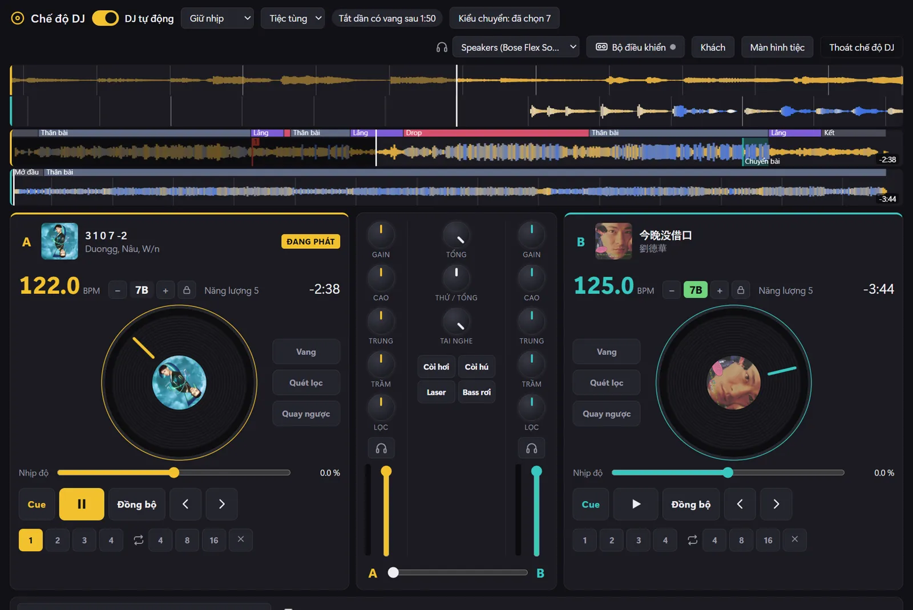
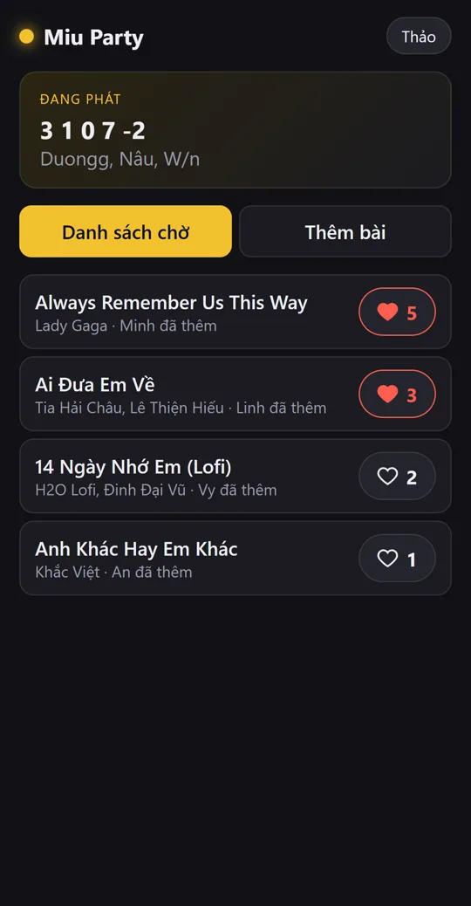
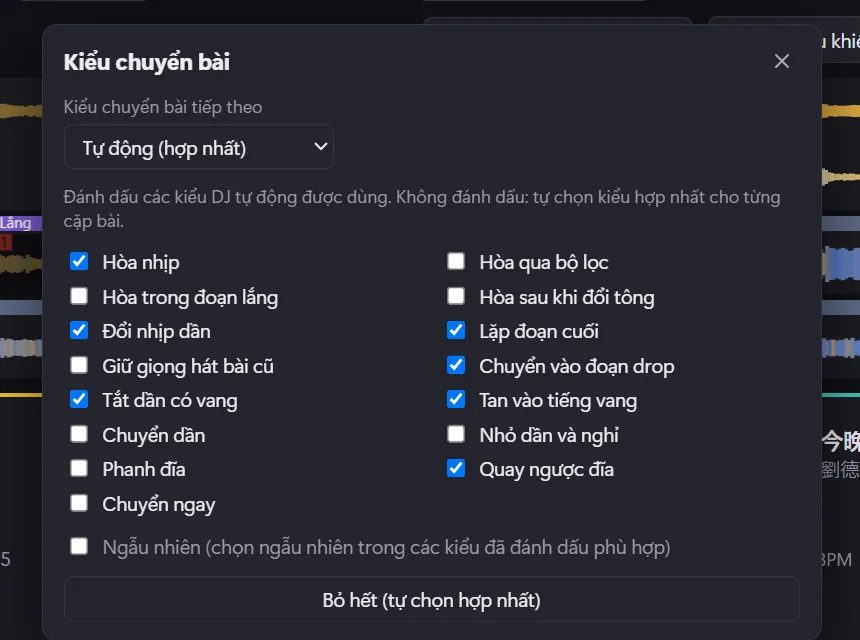
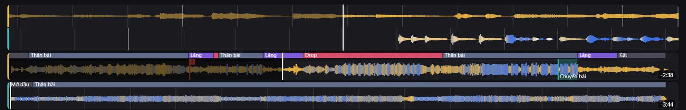

NEWMỚI DJ mode and a party queue your friends control Chế độ DJ và danh sách nhạc cả hội cùng chọn
Be the DJ. Or let Miu do it and go dance.
Tự làm DJ. Hoặc để Miu lo, bạn cứ quẩy.
Miu mixes your songs like a real DJ: beats lined up, smooth handovers, zero skills needed. Your friends scan a QR code, throw in their songs, vote for the bangers and even queue up YouTube karaoke. You? Go grab a drink.
Miu trộn nhạc y như DJ thật: khớp nhịp, chuyển bài mượt, chẳng cần biết gì. Bạn bè quét mã QR là tự thêm bài, thả tim bài hay, còn gọi được cả karaoke trên YouTube. Còn bạn? Đi lấy đồ uống thôi.
Free forever · No account · Windows 10 and 11 · English and Tiếng Việt
Miễn phí · Không cần tài khoản · Windows 10 và 11 · Tiếng Việt và English





DJ mode
Chế độ DJ
A DJ booth that actually knows what it's doing.
Bàn DJ biết tự làm mọi thứ.
Flip on Auto DJ and Miu runs the night. It listens to every song first (the tempo, the key, where the drop hits, where the singing is) and picks a next track that actually fits. Want to touch the decks? Go for it, they're yours.
Bật DJ tự động là Miu lo cả buổi. Miu nghe trước từng bài (nhịp, tông, chỗ drop, đoạn có lời hát) rồi chọn bài tiếp theo thật sự hợp. Muốn tự tay chơi? Cứ thoải mái, bàn DJ là của bạn.
15 ways to switch songs, picked by the vibe
15 kiểu chuyển bài, chọn theo không khí
Beat blends, drop swaps, echo outs, reverb washes, even a cheeky spin-back. Slow songs get a gentle fade, bangers get the big moves. Tick the ones you love, or let Miu mix it up.
Hòa nhịp, chuyển ngay vào đoạn drop, tắt dần có vang, tan vào tiếng vang, cả quay ngược đĩa. Bài chậm thì chuyển nhẹ nhàng, bài sôi động thì chơi lớn. Tích kiểu bạn thích, hoặc để Miu tự trộn ngẫu nhiên.


Hands on, whenever
Muốn chơi thì cứ chơi
Two decks, EQ, filters, echo, loops, hot cues and sound pads (yes, there's an air horn). Plug in a DJ controller and it just works, or teach Miu any knob with MIDI learn.
Hai bàn xoay, EQ, bộ lọc, vang, lặp đoạn, điểm nhớ và pad âm thanh (có cả còi hơi nhé). Cắm bàn DJ vào là chạy, nút nào lạ thì dạy Miu bằng MIDI learn.
See the music, not just a squiggle
Nhìn thấy cả bài nhạc, không chỉ là một đường gợn sóng
Waveforms coloured by what you hear: blue for the kick and bass, warm for voices and synths, white for the hi-hats. The intro, the build, the drop and the breakdown are labelled, and you can see exactly where the next mix lands.
Dạng sóng tô màu theo âm thanh: xanh là trống và bass, màu ấm là giọng hát và synth, trắng là hi-hat. Mở đầu, đoạn dồn, drop, đoạn lắng đều có nhãn, và bạn thấy rõ bài tiếp theo sẽ vào ở đâu.


Party mode
Chế độ tiệc
Everyone's the DJ. Nobody fights over the aux.
Ai cũng là DJ. Khỏi giành nhau cái loa.
Put the party screen on the TV. Friends scan, add, vote. The crowd's favourites play first and Auto DJ mixes them in like they were always the plan.
Đưa màn hình tiệc lên TV. Bạn bè quét mã, thêm bài, thả tim. Bài được thích nhất phát trước, DJ tự động trộn vào mượt như đã lên kế hoạch từ đầu.
TV on, QR up
Mở TV, hiện mã QR
The party screen opens in its own window. Drag it to the TV, go full screen, and keep the decks on your laptop.
Màn hình tiệc mở trong cửa sổ riêng. Kéo sang TV, bật toàn màn hình, còn bàn DJ vẫn nằm trên laptop của bạn.
Scan, add, done
Quét, thêm, xong
No app, no sign-up. Pick from your songs or paste a YouTube, Spotify or Apple Music link.
Không cần cài app, không cần đăng ký. Chọn từ kho nhạc của bạn, hoặc dán link YouTube, Spotify, Apple Music.
Hearts decide
Tim nhiều thì phát trước
Most votes jump to the top. When the queue runs dry, Auto DJ keeps the music going with picks that fit.
Bài nhiều tim nhảy lên đầu. Hết bài trong danh sách thì DJ tự động tự chọn tiếp bài hợp, nhạc không bao giờ tắt.
Karaoke night? Say less.
Karaoke hả? Chiến luôn.
Paste any YouTube karaoke video and it plays right on the big screen in YouTube's own player, with the QR code still in the corner. Nothing gets downloaded. When the song ends, the music picks back up by itself.
Dán link karaoke bất kỳ trên YouTube là phát ngay trên màn hình lớn bằng trình phát của chính YouTube, mã QR vẫn nằm ở góc. Không tải gì về máy. Hát xong, nhạc tự chạy tiếp.
Weddings, birthdays, Tết. Let the guests build the playlist while you actually enjoy your own party.Đám cưới, sinh nhật, Tết. Để khách tự lên danh sách nhạc, còn bạn thì tận hưởng bữa tiệc của chính mình. You're still the boss: approve songs first if you like, remove anything, and set how many songs each guest can queue. Bạn vẫn là người quyết: duyệt bài trước nếu muốn, xoá bài bất kỳ, và giới hạn mỗi khách được thêm bao nhiêu bài.
On your Wi-Fi, or from anywhere
Qua Wi-Fi, hoặc từ bất cứ đâu
Guests on your Wi-Fi connect straight to your PC. Friends on mobile data? Flip on the party link and they join through musicplayer.vietnamcos.com. Every party gets its own random link, and it's gone the moment you switch it off.
Khách dùng Wi-Fi nhà bạn thì vào thẳng máy tính của bạn. Bạn bè dùng 4G? Bật đường dẫn tiệc là vào được qua musicplayer.vietnamcos.com. Mỗi bữa tiệc có một đường dẫn ngẫu nhiên riêng, tắt là mất.
And the everyday player
Và trình phát mỗi ngày
Tiny. Fast. Sounds unreal.
Nhỏ. Nhanh. Nghe phê.
When the party's over, Miu is just a really good music player that barely touches your RAM.
Hết tiệc rồi thì Miu vẫn là một trình phát nhạc cực xịn mà gần như chẳng tốn RAM.
Bit-perfect sound
Âm thanh nguyên bản
Its own audio engine with WASAPI exclusive mode. FLAC, ALAC and hi-res play exactly as recorded. Audiophiles, you're welcome.
Bộ máy âm thanh riêng, có chế độ WASAPI độc quyền. FLAC, ALAC, hi-res phát đúng như bản gốc. Dân mê âm thanh sẽ thích.
Like it, it's on your iPhone
Thả tim là có trên iPhone
Thumbs up while you listen and the song lands in your iPhone's own Music app (or a USB music player). No iTunes drama.
Bấm thích khi đang nghe là bài vào thẳng ứng dụng Nhạc của iPhone (hoặc máy nghe nhạc USB). Không phải vật lộn với iTunes.
Lyrics that sing along
Lời bài hát chạy theo nhạc
The line being sung lights up as the song plays. Tap any line to jump there. Lyrics come from your files or free from LRCLIB.
Dòng đang hát sáng lên theo nhạc. Bấm dòng nào thì nhảy tới đó. Lời lấy từ tệp nhạc hoặc miễn phí từ LRCLIB.
Two speakers, perfectly in sync
Hai loa, khớp từng nhịp
Play through two Bluetooth speakers at once, even different brands. Miu listens through a mic and lines them up for you.
Phát cùng lúc trên hai loa Bluetooth, khác hãng cũng được. Miu nghe qua micrô rồi tự căn cho hai loa khớp nhau.
Control it from anywhere
Điều khiển từ đâu cũng được
Lock screen, media keys, headphone buttons and shortcuts that work even when another app is in front.
Màn hình khóa, phím đa phương tiện, nút tai nghe, và phím tắt dùng được cả khi đang mở ứng dụng khác.
Made for Vietnamese music
Sinh ra cho nhạc Việt
Broken accents in old files get fixed. Search "diem xua" and find Diễm Xưa. Proper Vietnamese sorting, full Tiếng Việt UI.
File cũ lỗi dấu được tự sửa. Gõ "diem xua" vẫn ra Diễm Xưa. Sắp xếp đúng thứ tự tiếng Việt, giao diện tiếng Việt đầy đủ.
10-band EQ
EQ 10 dải
Presets or your own curve, with a guard so nothing clips. Your iPhone still gets the original files.
Có sẵn mẫu hoặc tự chỉnh, có chống méo tiếng. iPhone vẫn nhận tệp gốc.
Podcasts, offline
Podcast, nghe offline
Top charts, search, downloads for the commute, and it remembers where you stopped.
Bảng xếp hạng, tìm kiếm, tải về nghe trên đường, và nhớ chỗ bạn đang nghe dở.
Mini player
Trình phát mini
A tiny always-on-top player with a visualizer, for when you're working and vibing at the same time.
Trình phát tí hon luôn nổi trên cùng, có hiệu ứng sóng nhạc, vừa làm việc vừa nghe nhạc.
iPhone
One button. Your faves, in the Music app.
Một nút bấm. Bài yêu thích vào ứng dụng Nhạc.
Miu talks to Apple's own software, so songs arrive the proper way: titles, artists and covers, right in the built-in Music app.
Miu làm việc với phần mềm chính thức của Apple, nên bài hát vào đúng chuẩn: đủ tên, nghệ sĩ và ảnh bìa, ngay trong ứng dụng Nhạc có sẵn.
Like what you hear
Thích bài nào, tim bài đó
Add your music folders and tap thumbs up on the songs you want in your pocket.
Thêm thư mục nhạc, bấm thích những bài bạn muốn mang theo.
Plug in
Cắm iPhone
Miu shows your phone, its free space and exactly what's about to change.
Miu hiện iPhone, dung lượng trống và chính xác những gì sắp thay đổi.
Hit Sync
Bấm Đồng bộ
New faves go on, songs you unliked come off, everything else stays put.
Bài mới thích được thêm, bài bỏ thích được gỡ, mọi thứ khác giữ nguyên.
Your songs are safe. Before every sync Miu backs up the phone's music library and keeps a copy of anything that only lives on the phone. Afterwards it double-checks nothing went missing.
Bài hát của bạn luôn an toàn. Trước mỗi lần đồng bộ, Miu sao lưu thư viện nhạc của iPhone và giữ bản sao những bài chỉ có trên điện thoại. Xong rồi Miu kiểm tra lại để chắc không mất bài nào.
FAQ
Hỏi đáp
You asked.
Bạn hỏi, Miu trả lời.
Is it really free?Miễn phí thật hả?
Yep. No account, no ads, no subscription.
Thật. Không tài khoản, không quảng cáo, không thuê bao.
I've never DJ'd. Can I still use DJ mode?Chưa từng làm DJ, dùng được không?
That's the whole point. Turn on Auto DJ and it does the mixing. Touch the decks only if you feel like it.
Được chứ, Miu làm ra cho bạn mà. Bật DJ tự động là Miu tự trộn nhạc. Thích thì mới đụng vào bàn DJ.
Do my friends need to install anything?Bạn bè có phải cài gì không?
Nope. They scan the QR code and the queue opens in their phone's browser.
Không. Quét mã QR là danh sách mở ngay trên trình duyệt điện thoại.
Does YouTube karaoke download the videos?Karaoke YouTube có tải video về không?
No. Videos play in YouTube's own embedded player, straight from YouTube. Nothing is saved on your PC.
Không. Video phát bằng trình phát nhúng của YouTube, lấy thẳng từ YouTube. Không lưu gì vào máy.
What if nobody adds songs?Không ai thêm bài thì sao?
Auto DJ keeps going with songs from your library that fit what's playing. The music never just stops.
DJ tự động cứ thế chọn tiếp bài hợp trong kho nhạc của bạn. Nhạc không bao giờ tự dưng tắt.
Can someone hijack the queue?Có ai phá danh sách được không?
You can turn on approval, remove any song, limit how many songs each guest has waiting, or close the queue. Each party link is random and dies when you switch it off.
Bạn bật duyệt bài, xoá bài bất kỳ, giới hạn số bài mỗi khách, hoặc đóng danh sách. Mỗi đường dẫn tiệc là ngẫu nhiên và mất ngay khi bạn tắt.
What do I need for iPhone sync?Đồng bộ iPhone cần gì?
Windows 10 or 11 with iTunes installed, a cable, and "Manually manage music and videos" turned on in iTunes. Miu walks you through it the first time.
Windows 10 hoặc 11 có cài iTunes, dây cáp, và bật "Quản lý nhạc và video thủ công" trong iTunes. Lần đầu Miu sẽ hướng dẫn.
Will it delete songs I added with 3uTools or iTunes?Có xoá bài đã chép bằng 3uTools hay iTunes không?
Never. Miu only removes songs it put there itself.
Không bao giờ. Miu chỉ gỡ những bài do chính Miu chép vào.
Windows says the download is unrecognised.Windows báo tệp tải về không rõ nguồn.
The installer isn't code-signed yet, so SmartScreen may complain. Hit "More info", then "Run anyway".
Bộ cài chưa được ký số nên SmartScreen có thể cảnh báo. Bấm "Thông tin thêm", rồi "Vẫn chạy".
How do I get updates?Cập nhật bản mới thế nào?
Miu checks once a day and shows a little card when there's something new. One click and it updates itself.
Miu kiểm tra mỗi ngày một lần và hiện thông báo khi có bản mới. Bấm một cái là tự cập nhật.

Your next party just got easier.
Bữa tiệc tới nhẹ tênh rồi.
Download Miu, plug in the speakers, put the QR on the TV. That's it.
Tải Miu, cắm loa, đưa mã QR lên TV. Vậy thôi.
Free · Windows 10 and 11
Miễn phí · Windows 10 và 11